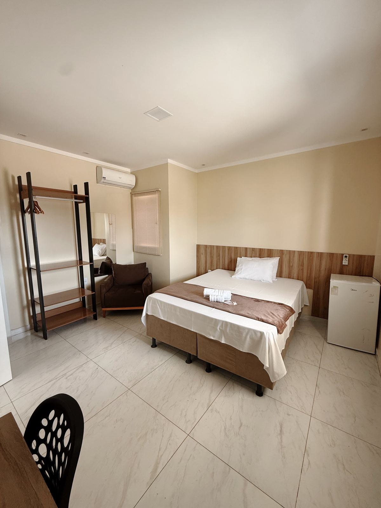
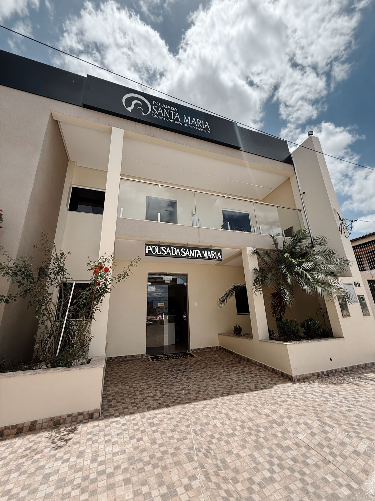
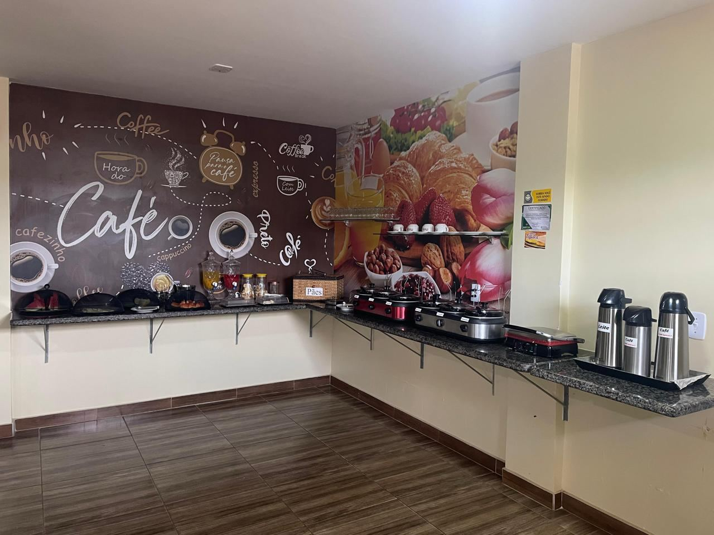
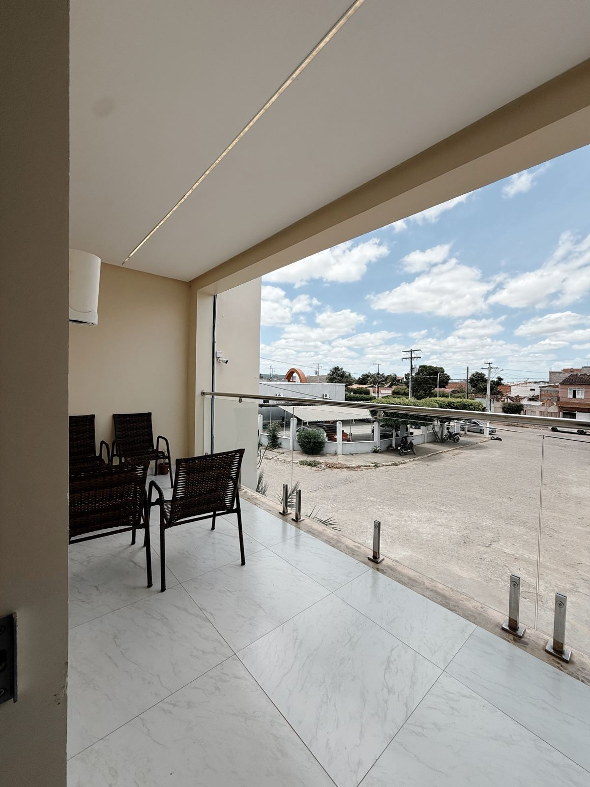
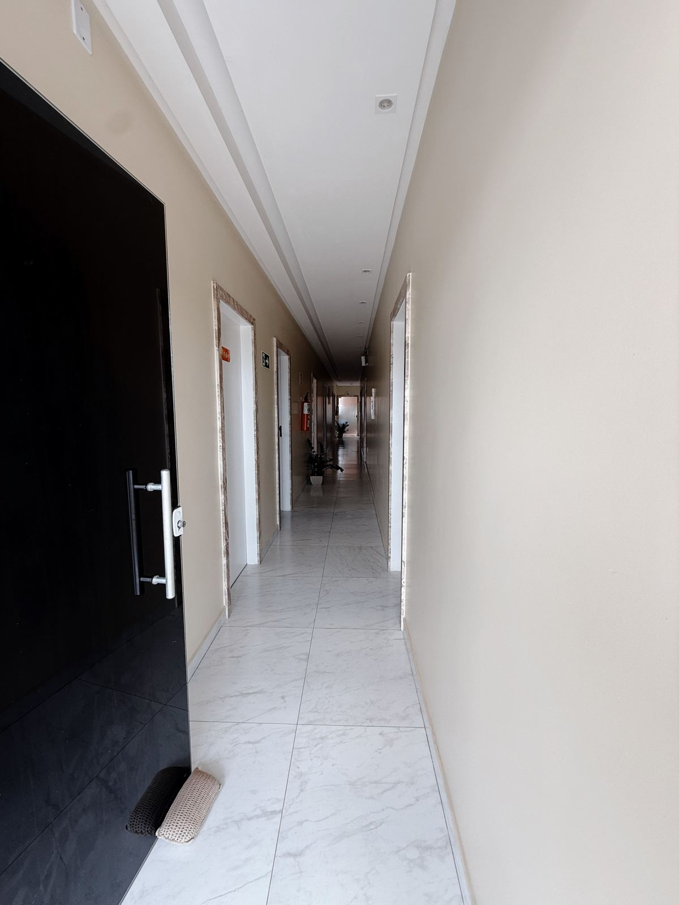
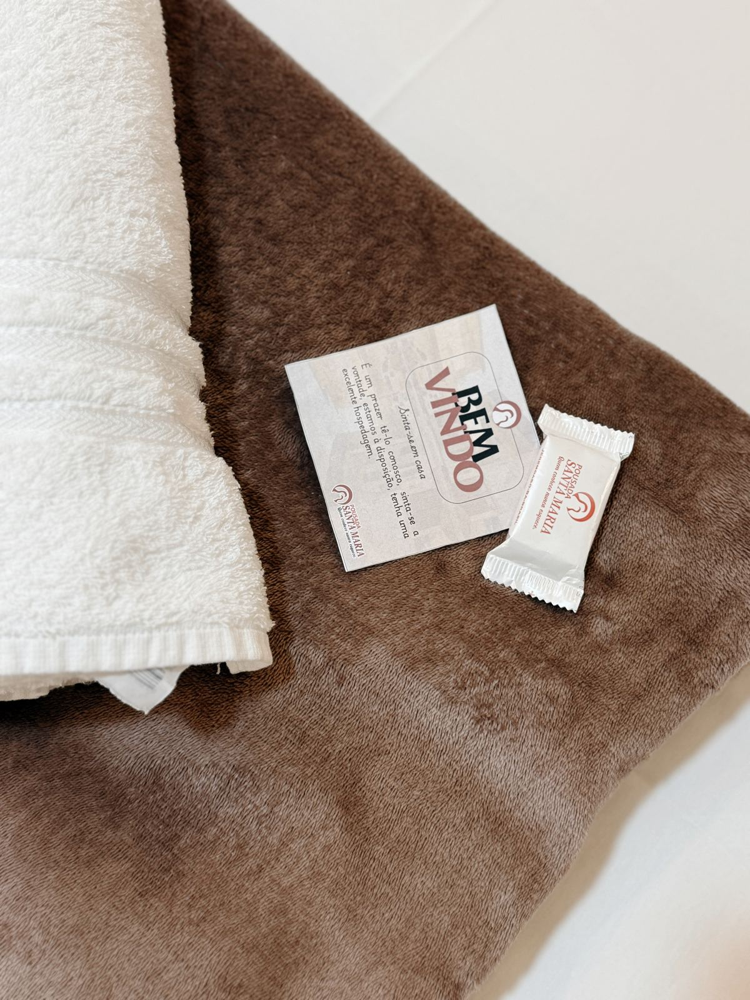
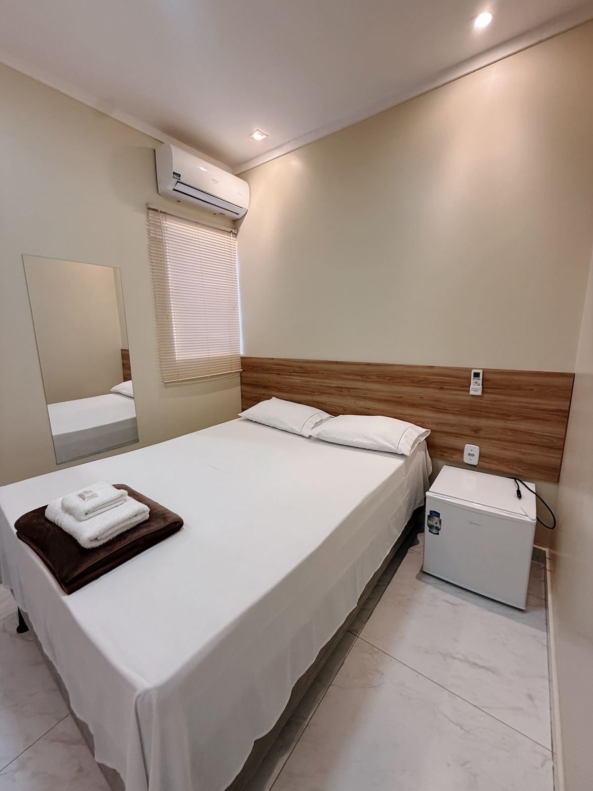
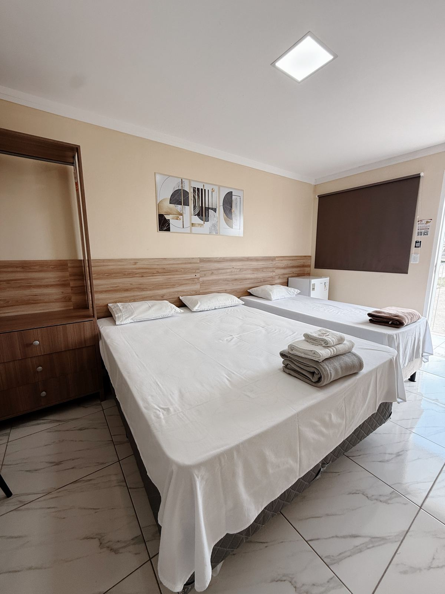
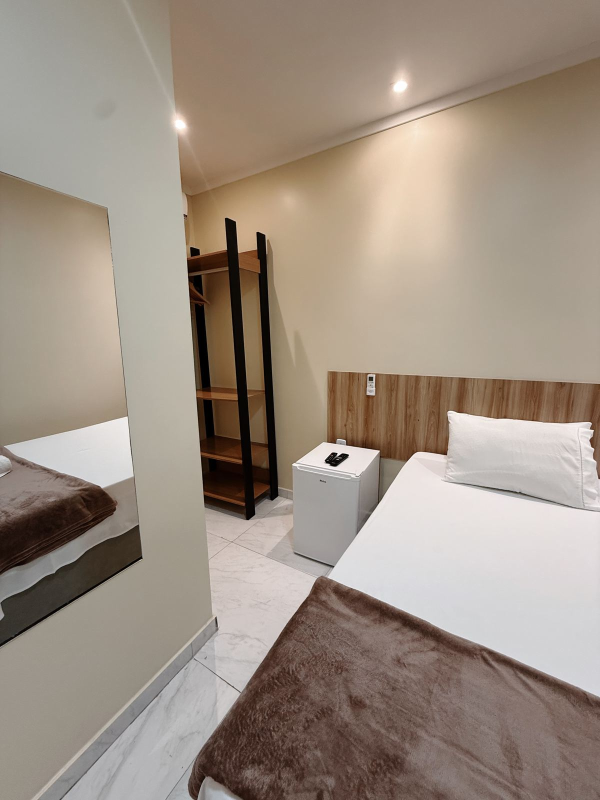

01
Suíte Casal
Cama de casal com enxoval caprichado, banheiro privativo e espaço para relaxar depois da estrada.
Cama casal · Ar-condicionado · TV Smart · Frigobar · Wi-Fi
Consultar valor →Jeremoabo · Sertão da Bahia
Uma pousada de família no centro da cidade, com quartos novos e climatizados e o café da manhã mais caprichado da região.


Prefere reservar online? Ver disponibilidade no sistema de reservas →
Mercados, farmácias e lojas a poucos minutos a pé. Por dentro, silêncio, quarto cheiroso e gente que te chama pelo nome — a tranquilidade do interior com a conveniência do centro.




Acomodações

Cama de casal com enxoval caprichado, banheiro privativo e espaço para relaxar depois da estrada.
Cama casal · Ar-condicionado · TV Smart · Frigobar · Wi-Fi
Consultar valor →
Ideal para famílias ou pequenos grupos: uma cama de casal e uma de solteiro, com armário para organizar tudo.
Casal + solteiro · Ar-condicionado · TV Smart · Frigobar · Wi-Fi
Consultar valor →
Prático e confortável para quem viaja a trabalho — com mesa para o notebook e internet estável.
Cama solteiro · Ar-condicionado · Armário · Wi-Fi
Consultar valor →6h30 – 9htodos os dias
Incluso na diária
Aquele café meio amargo, cuscuz quentinho e tapioca feita na hora, servidos no nosso refeitório climatizado.
Uma história que começou na beira da estrada e atravessou três gerações da mesma família.
Jeremoabo era rota dos retirantes que seguiam nos paus de arara para São Paulo e Rio. Na Brasília, parte norte do centro, a matriarca da família mantinha um dos restaurantes que davam comida e descanso a quem enfrentava a dura viagem.
A neta de Dona Mariinha passou a oferecer também a dormida. Com seu jeito cativante e extrovertido, conquistou uma clientela fiel — muitos ainda se hospedam com a gente.
O nome homenageia a Santa e a pioneira Dona Mariinha. Evoluímos para a hospedagem que o mercado exige, sem perder o que mais importa: a sensação de estar em casa.
Em 2025
A pousada é aconchegante, com atendimento impecável e uma localização perfeita. Tudo muito limpo e bem cuidado, sem contar o café da manhã delicioso e variado. Com certeza voltarei e recomendarei!
Um ambiente extremamente acolhedor, pessoas agradáveis e competentes, quartos limpos e confortáveis. Um lugar que faz jus ao seu slogan: “Quem conhece, nunca esquece”.
Excelente atendimento via WhatsApp, me ajudaram com transporte. Apartamentos organizados, perfumados e uma recepção maravilhosa!
Pousada com ótima estrutura, bem localizada, ambiente limpo e agradável, refeitório climatizado. Ótimo custo-benefício dentro de Jeremoabo.
Check-in a partir das 14h e check-out até as 12h. Precisa de outro horário? Avise com antecedência e faremos o possível, conforme a disponibilidade. Leve um documento com foto. Reservas não confirmadas até as 18h podem ser canceladas.
Cartão de crédito e débito, transferência, PIX e dinheiro — na reserva ou na chegada, como combinarmos. Para garantir a estadia, pedimos um depósito antecipado de 30%.
Com até 7 dias de antecedência, o valor pode ser reembolsado ou a reserva reagendada. Em prazo menor, pode haver cobrança parcial.
Para a segurança e o conforto de todos, a pousada pode suspender o acesso em caso de descumprimento das normas, comportamento inadequado ou falta de pagamento. O hóspede será comunicado e orientado sobre como regularizar a situação.